JAE HYUN SEO _ PORTFOLIO WEB

ABOUT SELF
GAME
JOURNAL
DOWNLOAD

1. 단서 획득 - 단서책
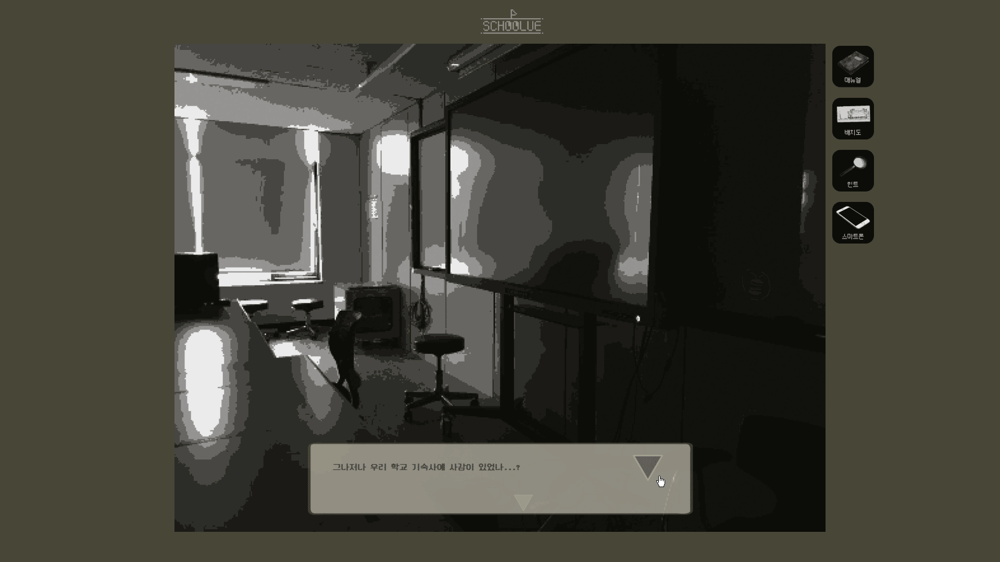
명확한 단서를 보여주는 단서책.
플레이어가 어떠한 방법으로든 단서를 얻었다고 판단이 되면 우측 상단에 단서를 얻었다는 팝업 창이 뜨게 되는데, 이를 확인하면 해당관련 '단서 책'을 볼 수 있게 된다. 이 안에는 단서에 대한 주인공의 시점에서 생각하는 내용을 확인할 수 있다. 가끔 단서가 아닌 ‘업적’을 달성하기도 한다.

2-1. 단서 획득 - 단서책을 얻는 경로
2-2. 단서 획득 - 물질적 단서
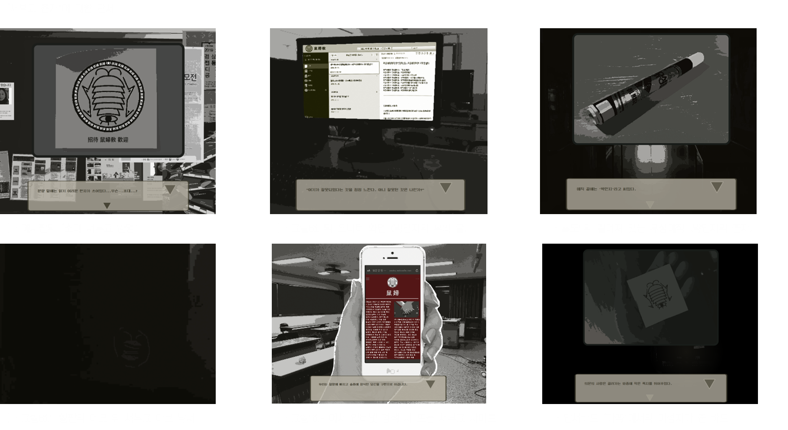
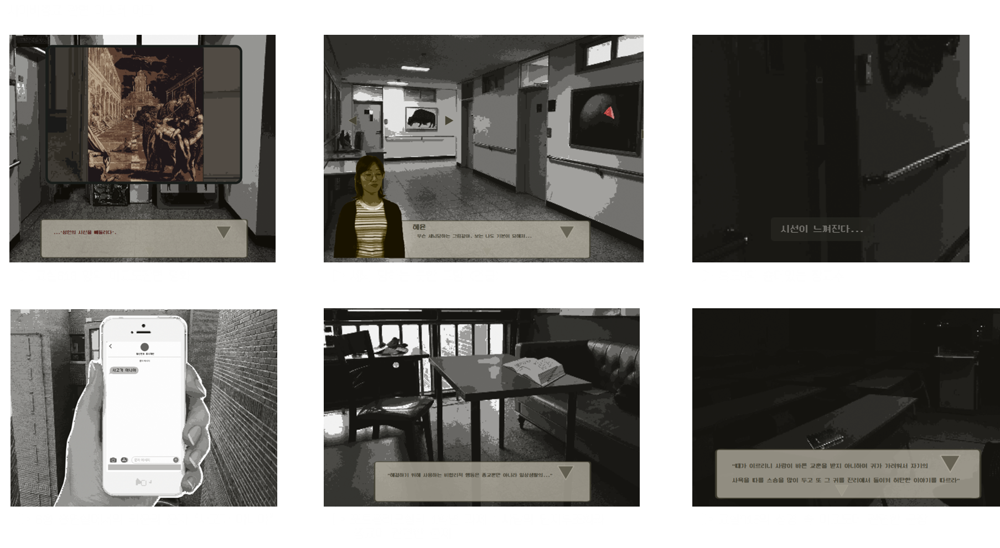
3. 추리하기
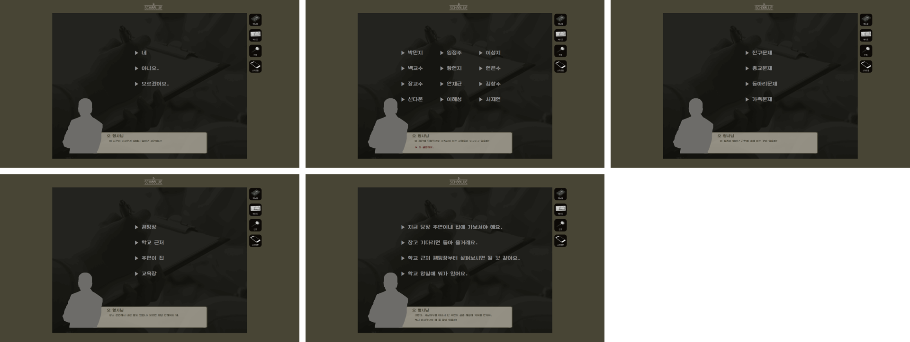
단서를 모두 얻었다면, 알아낸 정보를 형사님께 알려드리자!
형사님이 하시는 질문은 총 5개로 나뉜다.
이 질문 중에는 복수 선택이 가능한 것도 있고 정답이 여러 개 인 것도 있다. 게임 내에서 얻은 단서를 토대로 플레이어가 맞추는 질문의 개수에 따라 엔딩의 분기는 총 3개로 나뉘게 된다.
▶ 질문에 대한 정답 (노란색)
▶ 질문에 대한 근거(관련 단서)
4. 엔딩 - Ending1 [True Ending]
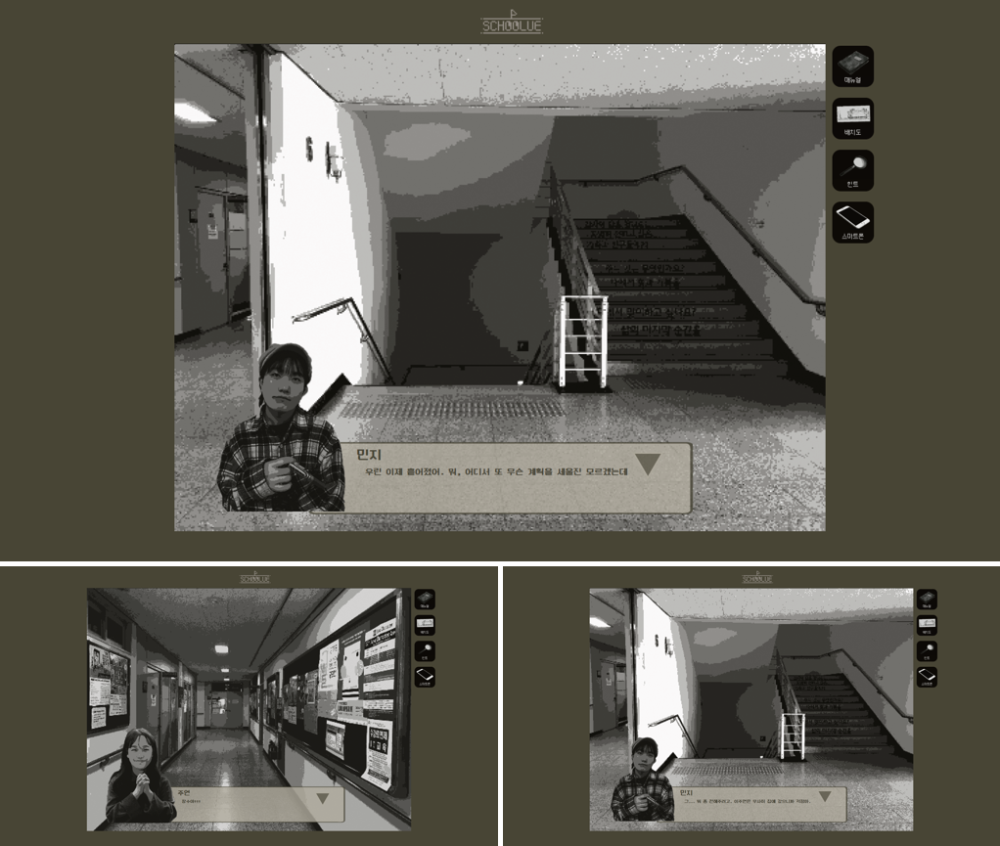
Ending1 [True Ending]: 돌아온 영혼
(질문을 8개모두 맞췄을 경우)
형사님의 질문이 끝나고 학교로 돌아온 주인공에게 박민지가 찾아와 서부교는 경찰들이 들이닥치면서 해산하게 되었고 덕분에 자신도 자유로워지고 이주연도 무사히 돌아갔다며 감사의 인사를 전한다.
인사가 끝난 후, 주인공은 과사에 와 있는 이주연과 오형사를 마주치게 된다. 주인공은 이렇게 만난 이주연과 얼싸안으며 울고 오형사는 그 광경을 바라보며 미소짓는다.
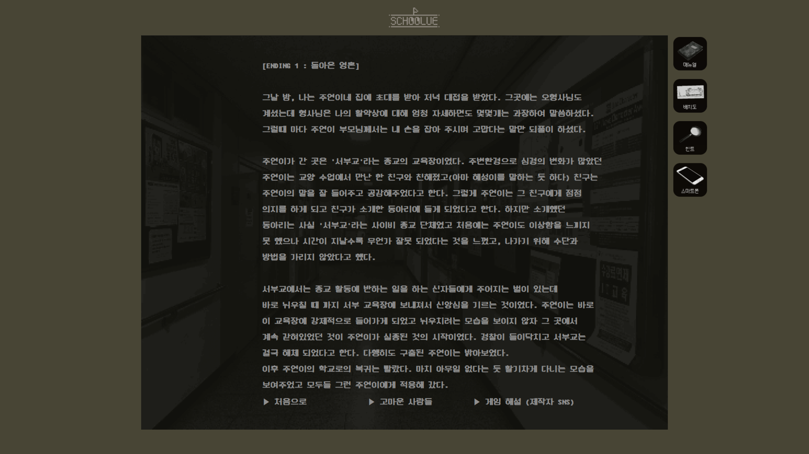
4. 엔딩 - Ending2 [Normal Ending]
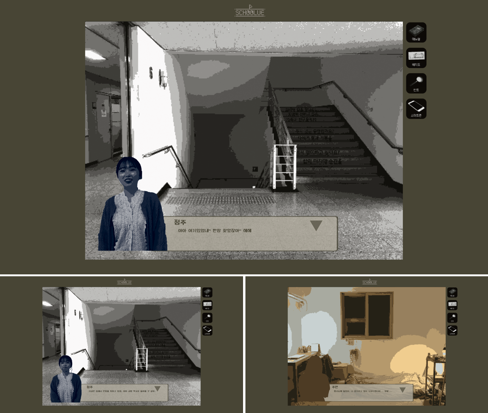
Ending2 [Normal Ending]: 돌아온 주연이
(질문을 3-7개 맞췄을 경우)
형사님의 질문이 끝나고 학교로 돌아온 주인공에게 임정주가 찾아와 주연이의 귀환 소식을 전하게 되고, 지금은 집에서 안정을 취하고 있으니 연락해보라는 말을 남긴다. 자취방으로 돌아와 이주연에게 연락한 주인공은 이주연에게 감사 인사를 받고 그 동안 있었던 일들에 대해 이야기를 나눈다.
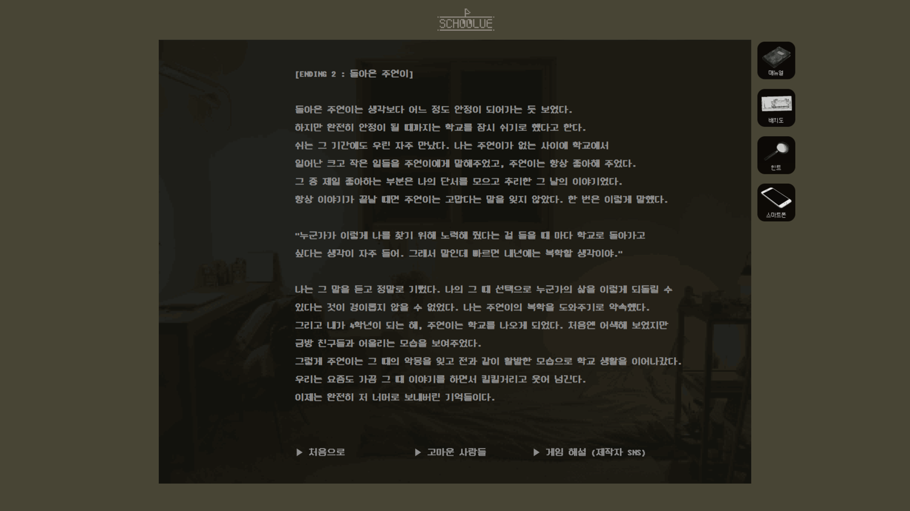
4. 엔딩 - Ending3 [Bad Ending]
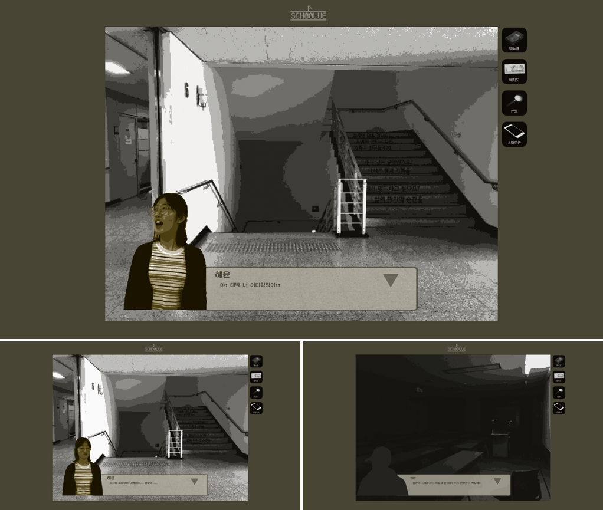
Ending3 [Bad Ending]: 돌아온 껍데기
(질문을 1-2개 맞췄을 경우)
형사님의 질문이 끝나고 학교로 돌아온 주인공에게 심혜윤이 찾아와 주연이의 귀환 소식을 전하게 된다. 하지만 주인공에게 연락을 주겠다던 형사에게는 문자 한 통 조차 없었기에 주인공은 당황했지만 이주연의 귀환에 기뻐하기로 한다. 주인공과 심혜윤의 대화가 끝나고 밤의 714교실에서 서부교 내 아직 남아있는 신자들이 계속해서 음모를 꾸미는 듯한 움직임을 보인다.
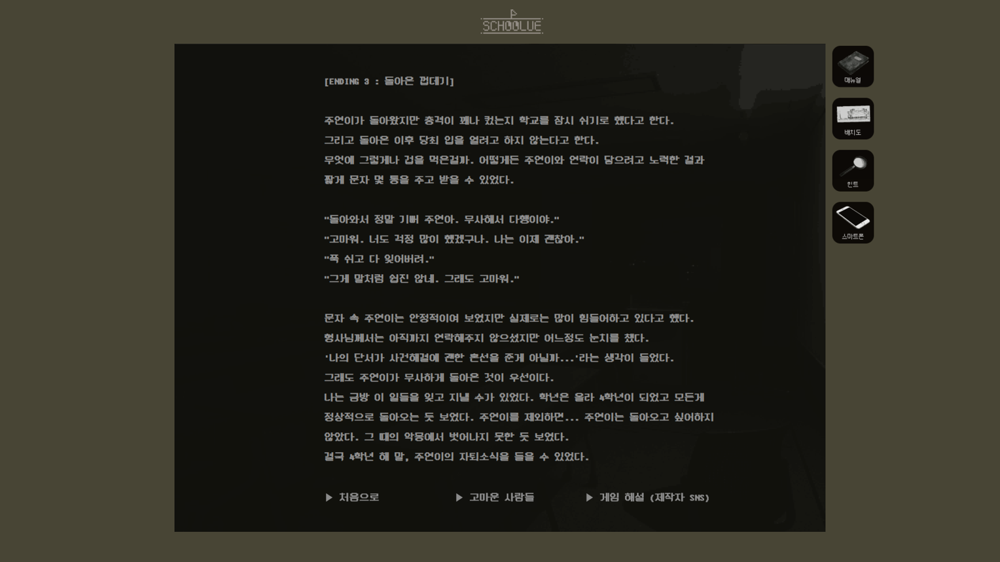
5. Thanks To
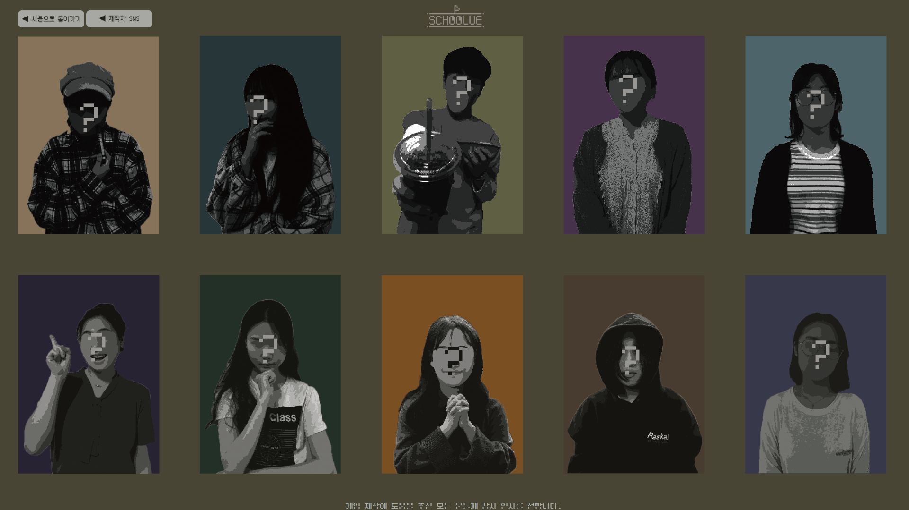
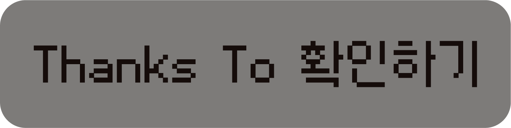
Thanks To
전체적으로 실사를 편집하여 게임 내 그래픽 요소로 사용한 것이 대부분이기 때문에 많은 이들의 도움을 받게 되었다.(등장인물, 장소 연출 등) 개인적으로 도움을 받은 모든 이들에게 감사를 표하며 이들이 준 도움을 확인 할 수 있는 Thanks to 페이지를 마지막으로 제작하게 되었다.